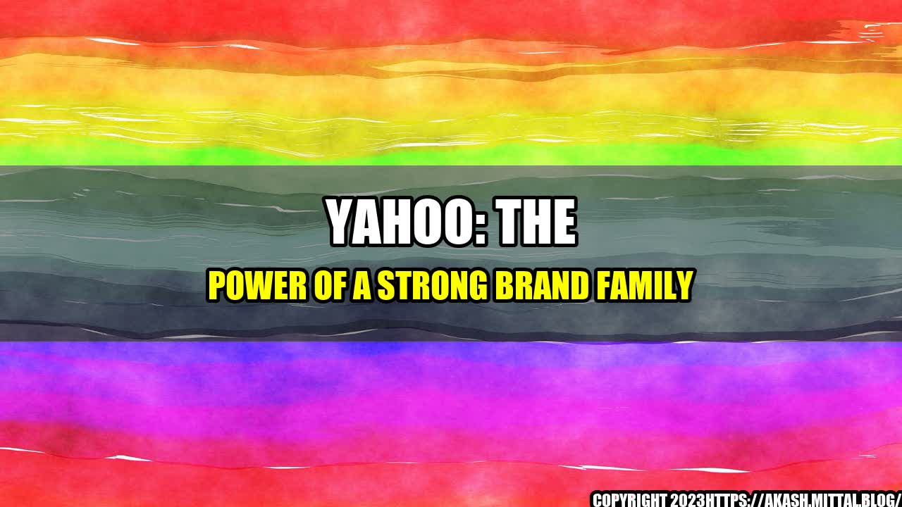

Yahoo: The Power of a Strong Brand Family
Image Credits https://uk.sports.yahoo.com/news/mean-girlss-lindsay-lohan-asked-081600018.html
The year was 1994 and the internet was still an emerging technology, but two young Stanford University students had a vision of creating a website that would become the gateway to the World Wide Web. Jerry Yang and David Filo founded Yahoo, a virtual directory that would allow users to easily search for and find information online.
Fast forward more than two decades later, and Yahoo has become one of the most recognized names in the tech industry. While the company has gone through a lot of changes over the years, one thing has remained constant – the power of its brand family.
The Yahoo Family of Brands
Yahoo operates a wide range of online services and products, including:
- Yahoo Mail: one of the original web-based email services
- Yahoo News: a hub for news from around the world
- Yahoo Finance: a platform for financial news, analysis, and data
- Yahoo Sports: a destination for sports news, scores, and stats
- Yahoo Search: a powerful search engine for the internet
- Yahoo Answers: a community-driven knowledge sharing platform
- Yahoo Groups: a forum for online discussions and groups
- Yahoo Messenger: a messaging app for text, voice, and video communications
- Yahoo Lifestyle: a lifestyle-based website covering topics from entertainment to health
These are just a few examples of the many services offered by Yahoo. Collectively, these brands form a powerful family that allows Yahoo to reach a wide audience and offer solutions to a variety of online needs.
The Benefits of a Strong Brand Family
Having a strong brand family comes with a number of benefits:
Increased Brand Recognition
By grouping all of its brands under the Yahoo umbrella, the company is able to benefit from increased recognition across all of its products and services.
Cross Promotion
Each individual brand within the Yahoo family is able to promote its sister brands. For example, a user who visits Yahoo Finance may be prompted to also try Yahoo Sports or Yahoo Lifestyle.
Cost Savings
By sharing resources across all of its brands, Yahoo is able to save on costs. For example, marketing materials can be shared across multiple brands, reducing the need to create unique materials for each individual service.
Increased Customer Loyalty
When someone becomes a user of one Yahoo brand, they are more likely to become a user of other Yahoo brands. This is because the user has already established a relationship with the company and trusts its services.
These benefits are just a few examples of what can be achieved with a strong brand family. By grouping its products and services under a single brand, Yahoo has been able to create a powerful online presence that rivals some of the biggest players in the industry.
As someone who has been a user of Yahoo products for many years, I can attest to the power of its brand family. For example, I started using Yahoo Mail many years ago, but have since become a frequent user of Yahoo News and Yahoo Finance. I have also recommended these services to friends and family, who have become users themselves.
Another personal anecdote comes from a friend who recently became a user of Yahoo Answers. This friend had a question about a medical issue and turned to Yahoo Answers for help. Not only did she find the answer she was looking for, but she also discovered a community of users who were eager to help and share their own experiences.
These personal stories illustrate the power of a strong brand family. When a company is able to offer a range of services that meet a variety of needs, it creates a loyal user base that is willing to recommend and promote its products.
Practical Tips
If you are looking to create a strong brand family for your own business, here are a few practical tips to keep in mind:
Create a Consistent Brand Image
Make sure that all of your brands share a consistent look and feel. This will help users recognize your company across all of its services.
Offer a Variety of Services
If you are able to offer a range of services that meet different needs, you will be able to create a more loyal user base and benefit from cross promotion.
Promote Your Sister Brands
Each individual brand within your family should promote its sister brands to encourage cross-usage and increased customer loyalty.
Showcase Customer Success Stories
By sharing stories of how customers have succeeded using your products and services, you can build credibility and trust with potential users.
By following these tips, you can create a brand family that is both effective and memorable.
Conclusion
In Summary
- Yahoo's family of brands allows the company to benefit from increased brand recognition, cost savings, cross promotion, and increased customer loyalty.
- Personal anecdotes illustrate the power of a strong brand family for creating loyal users and brand advocates.
- Practical tips include creating a consistent brand image, offering a variety of services, promoting sister brands, and showcasing customer success stories.
By creating a strong brand family, Yahoo has become a household name and a leader in the tech industry. By following the tips outlined above, you can create your own brand family that will help you stand out in a crowded marketplace.
Curated by Team Akash.Mittal.Blog
Share on Twitter Share on LinkedIn